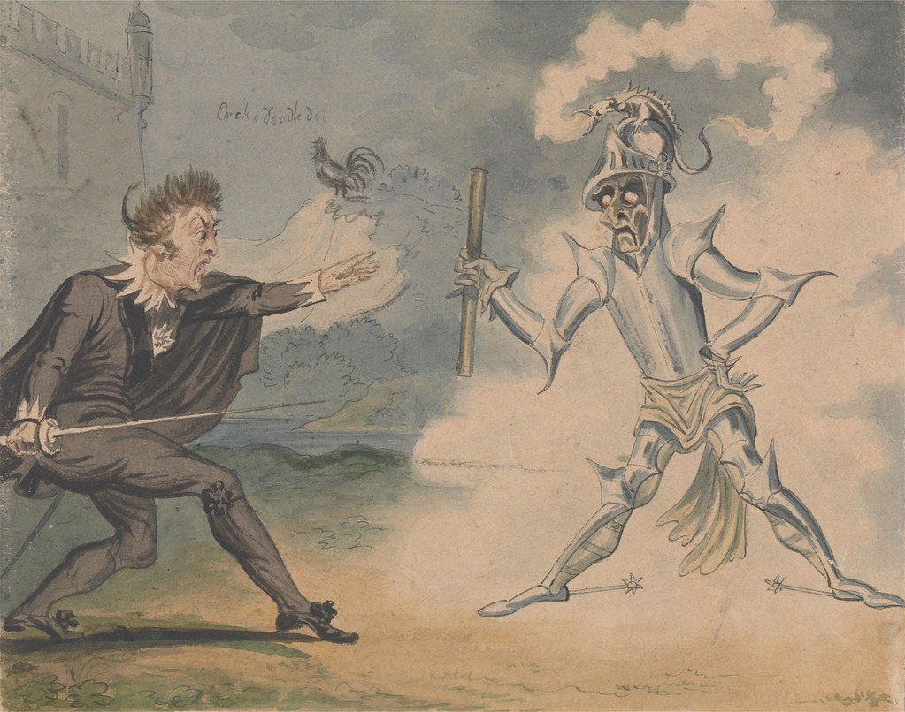

Step into the shadowed halls of Elsinore Castle and witness Shakespeare's masterpiece come to life. Hamlet tells the story of a prince torn between duty, revenge, and his own inner turmoil. Betrayal, love, madness, and the struggle for truth collide in a gripping tale that has captivated audiences for centuries.Join us for an unforgettable theatrical journey, where every secret, every whisper, and every choice shapes a destiny that is as relevant today as it was 400 years ago. Will Hamlet avenge his father's death—or will indecision claim him?Don't miss this hauntingly beautiful production of one of the greatest plays ever written.
Show Dates: December 5 - December 15, 2025
Venue: Cat Eyes Theatre, Main Stage
Running Time: Approximately 3.5 hours (including intermission)
| Production Company | Cat Eyes Theatre Company |
|---|---|
| Director | Joe Smith |
| Cast Members |
|
| Stage Crew Members |
|
"An absolutely stunning performance! The actors brought the story to life with such passion and energy."
- Josh Kiely, The Daily Times
"A mesmerizing experience from start to finish. The set design and costumes were breathtaking."
- Barry Lewis, Theatre Weekly